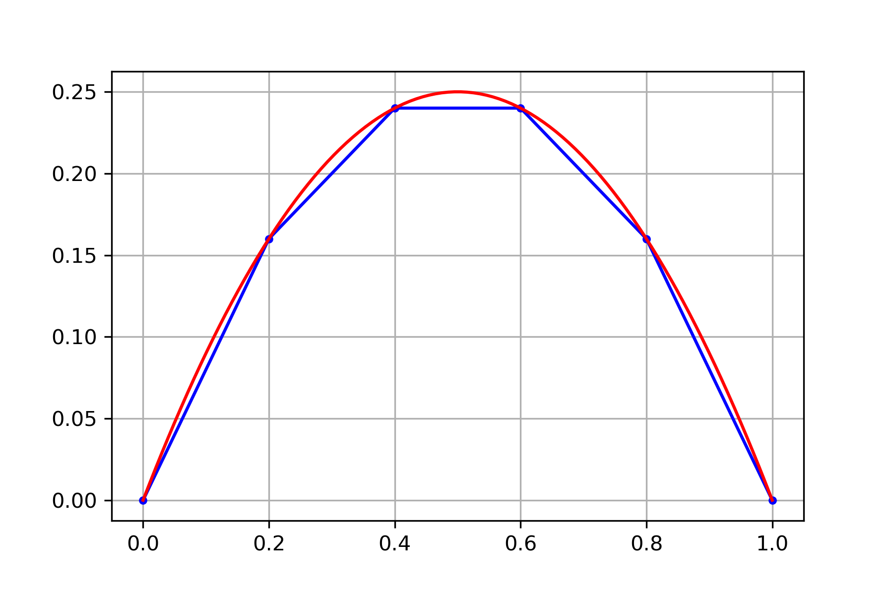
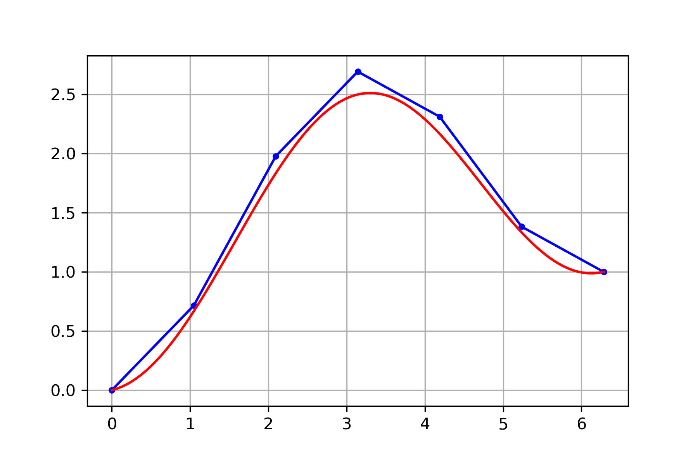
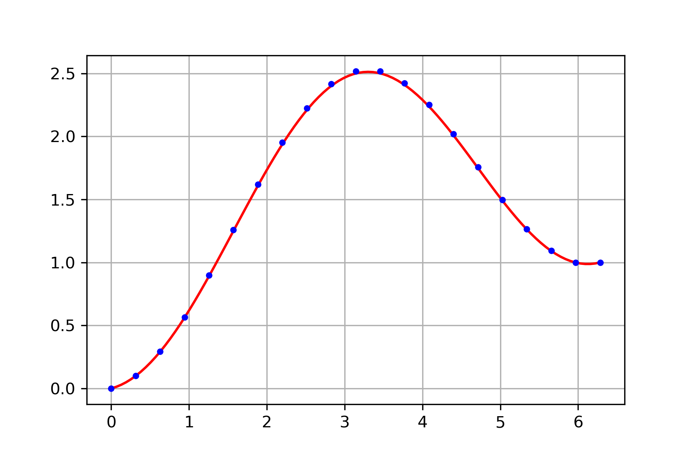

Differential Equations#
Most differential equations are impossible to solve exactly and so we use numerical methods such as the finite difference method to approximate solutions. The finite difference method applied to a linear differential equation yields a linear system of equations \(A \boldsymbol{y} = \boldsymbol{b}\).
Second Order Differential Equations#
An ordinary differential equation is an equation involving an unknown function \(y(t)\) and its derivatives. The order of a differential equation is the highest order derivative appearing in the equation. There are many kinds of differential equations. In this section, we consider only second order linear ordinary differential equations
Boundary conditions are equations imposed on the solution at the boundary points \(t_0\) and \(t_f\). For example, specify values of the solution \(y(t)\) at the endpoints
or specify a value of the solution \(y(t)\) at one endpoint and a value of the derivative \(y'(t)\) at the other endpoint
Finite Difference Method#
The Taylor series of a smooth function \(f(x)\) centered at \(x=a\) is
Finite difference formulas are derived from Taylor series. Let \(y(t)\) be a smooth function and consider the Taylor series
Truncate and rearrange the first series for the forward difference formula
Truncate and rearrange the second series for the backward difference formula
Subtract \(y(t+h) - y(t-h)\) and truncate to get the (first order) central difference formula
Add \(y(t+h) + y(t-h)\) and truncate to get the (second order) central difference formula
The finite difference method applied to a second order linear ordinary differential equation with boundary conditions
Discretize the domain: choose \(N\), let \(\displaystyle h = \frac{t_f - t_0}{N+1}\) and define \(t_k = t_0 + kh\).
Let \(y_k \approx y(t_k)\) denote the approximation of the solution at \(t_k\).
Substitute finite difference formulas into the equation to define an equation at each \(t_k\).
Rearrange the system of equations into a linear system \(A \boldsymbol{y} = \boldsymbol{b}\) and solve for
\[\begin{split} \boldsymbol{y} = \begin{bmatrix} y_1 \\ y_2 \\ \vdots \\ y_N \end{bmatrix} \end{split}\]
Consider a second order linear ordinary differential equation with boundary conditions of the form
Choose \(N\) and let \(\displaystyle h = (t_f - t_0)/(N+1)\) and define \(t_k = t_0 + kh\). Let \(y_k\) denote an approximation of \(y(t_k)\). Note that the boundary conditions give us \(y_0 = \alpha\) and \(y_{N+1} = \beta\) and let
Let \(r_k = r(t_k)\) and substitute the central difference formula at \(t_k\) into the differential equation
Therefore we have \(N\) equations and \(N\) unknowns \(y_k\) for \(k=1,\dots,N\). Use the boundary conditions \(y_0 = \alpha\) and \(y_{N+1} = \beta\) and rearrange the equations
Rewrite in matrix form \(A \boldsymbol{y} = \boldsymbol{b}\) where
Setup a linear system \(A \boldsymbol{y} = \boldsymbol{b}\) for the equation with boundary conditions
using step size \(h=0.2\).
The step size \(h\) corresponds to \(N=4\) in our formulation, and \(r(t) = -2\), \(\alpha = \beta = 0\) therefore
Solve the system to find
The equation is very simple and we can solve exactly by integrating twice
The boundary conditions imply \(C_1 = 1\) and \(C_2 = 0\) and therefore the exact solution is
Notice that our finite difference approximation found the exact values \(y(0.2) = 0.16\), \(y(0.4) = 0.24\), \(y(0.6) = 0.24\), \(y(0.8) = 0.16\). This is because our equation is very simple and the solution is a polynomial of degree 2. The finite difference method does not compute exact values in general.
{kind=link}
Setup a linear system \(A \boldsymbol{y} = \boldsymbol{b}\) for the equation with boundary conditions
using 7 equally spaced points from \(t_0 = 0\) to \(t_f = 2\pi\).
The value \(N=5\) corresponds to 7 equally spaced points in our formulation with step size
We have \(r(t) = \cos(t)\) and \(\alpha = 0\) and \(\beta = 1\). Note that \(r_k = \cos(k\pi/3)\) therefore
Use scipy.linalg.solve to compute the solution. The equation is elementary and we can solve exactly by integrating twice
Plot the exact solution together with our approximation
{kind=link}
Increasing the number of points in the discretization (equivalently, decreasing the step size \(h\)) decreases the error but increases the number of computations. This is a general principle in numerical computing: higher accuracy requires more computations. For example, consider the same equation as the previous example
but now use 21 equally spaced points from \(t_0 = 0\) to \(t_f = 2\pi\). Then \(N=19\) and
and the finite difference method produces a much better solution
{kind=link}
Consider the general form of a second order linear ordinary differential equation with boundary conditions
Choose \(N\) and let \(\displaystyle h = \frac{t_f - t_0}{N+1}\) and define \(t_k = t_0 + kh\). Let \(y_k\) denote an approximation of \(y(t_k)\). Note that the boundary conditions give us \(y_0 = \alpha\) and \(y_{N+1} = \beta\) and let
Let \(p_k = p(t_k)\), \(q_k = q(t_k)\) and \(r_k = r(t_k)\), and substitute the central difference formulas for both \(y''\) and \(y'\) at \(t_k\) into the differential equation
Rearrange the equation
Introduce the notation
Use the boundary conditions \(y_0 = \alpha\) and \(y_{N+1} = \beta\) and rearrange the equations
Rewrite in matrix form \(A \boldsymbol{y} = \boldsymbol{b}\) where
Consider the differential equation with boundary conditions
Solving the linear system derived above with \(N=19\) produces the result

Consider a second order linear ordinary differential equation with boundary conditions of the form
Note that the boundary condition at \(t_0\) specifies the value of the derivative \(y'(t_0) = \alpha\). Use the same notation as in the examples above and apply the central difference formula
Therefore we have \(N\) equations
We can use \(y_{N+1} = \beta\) and move the term to the right side in the last equation but \(y_0\) in the first equation is unknown. Use the forward difference formula to approximate \(y_0\)
Therefore we can write the equations in matrix form \(A \boldsymbol{y} = \boldsymbol{b}\) where
Exercises#
Exercise 1. Determine whether the statement is True or False.
The finite difference method applied to a linear second order differential equation with boundary conditions will compute exact values of the solution \(y_k = y(t_k)\) if the step size \(h\) is chosen to be small enough.
The finite difference method applied to a linear second order differential equation with boundary conditions will never compute exact values of the solution \(y_k = y(t_k)\) for any differential equation and step size \(h\).
Exercise 2. Suppose we discretize the domain \([0,1]\) of a differential equation with boundary conditions
with step size \(h=0.1\) and derive a linear system \(A \boldsymbol{y} = \boldsymbol{b}\). How many unknown values \(y_k\) are we solving for in this case?
Exercise 3. Setup a linear system \(A \boldsymbol{y} = \boldsymbol{b}\) to approximate the solution of the equation with boundary conditions
using step size \(h=0.25\). Use the forward difference formula and the boundary condition \(y'(0)=0\) to approximate the boundary value \(y_0\).
Exercise 4. Derive the general form of the linear system \(A \boldsymbol{y} = \boldsymbol{b}\) for an equation with boundary conditions
using the forward difference formula to approximate \(y'\). Use the notation as in the examples: choose \(N\), let \(h = (t_f - t_0)/(N+1)\) and \(t_k = t_0 + kh\), let \(y_k\) denote an approximation of \(y(t_k)\) and note \(y_0 = \alpha\) and \(y_{N+1} = \beta\).
Exercise 5. Explain why it is not possible to derive a linear system \(A \boldsymbol{y} = \boldsymbol{b}\) for the equation
by applying finite difference formulas.
Exercise 6. Suppose we compute the finite difference approximation of the equation
with 5 equally spaced points from \(t_0 = 0\) to \(t_4 = 1\) and find \(y_1 = -0.19554177\) and \(y_3 = 0.35872678\). Determine \(y_2\).
Exercise 7. Setup a linear system \(A \boldsymbol{y} = \boldsymbol{b}\) for the finite difference approximation of
using 5 equally spaced points from \(t_0 = 1\) to \(t_4 = 3\).
Exercise 8. Setup a linear system \(A \boldsymbol{y} = \boldsymbol{b}\) for the finite difference approximation of
using 5 equally spaced points from \(t_0 = 1\) to \(t_4 = 3\). (Hint: use the backwards difference formula to approximate \(y_4\).)
Exercise 9. Setup the linear system \(A \boldsymbol{y} = \boldsymbol{b}\) corresponding to the finite difference method applied to the equation
using 9 equally spaced points on the domain \([-1,1]\).
Exercise 10. Setup the linear system \(A\boldsymbol{y} = \boldsymbol{b}\) corresponding to the finite difference method applied to the equation
using 9 equally spaced points on the domain \([0,2\pi]\).
Exercise 11. Setup the linear system \(A\boldsymbol{y} = \boldsymbol{b}\) corresponding to the finite difference method applied to the equation
using 9 equally spaced points on the domain \([0,2\pi]\).